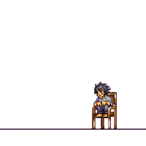
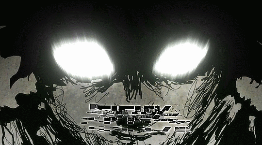
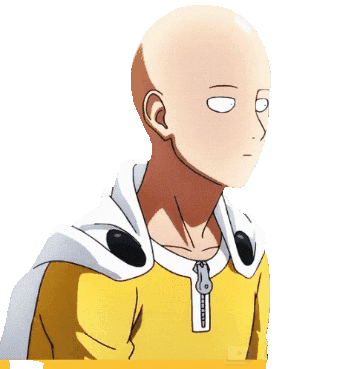
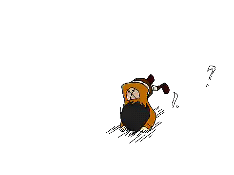

Return to previous locations:
 |
 |
| Back to the Crossroads |
Back to Sankalp's Homepage |
I'll get right to the point. I LOVE ANIME. Sure, i dont get much time now, but I try squeezing out some whenever i can. So i present you with some Anime which i find very, very good. I have seen most of them and the rest are work in progress.
And yeah, Dont mind the order. I love those in the bottom just as much as those at the top.
And one last thing, Each image will take you to the Anime OP.
This is the one everyone starts from. The battle of wits bw light and L is nothing less than fantastic. Makes you think hard.
This is an ongoing series. The fights are fantastic and the cheap tricks hilarious. Definitely worth a watch.
ONE has a reputation. His characters seem all-powerful but show an inner weakness which is much more intriguing to watch than an arc which focuses just on gaining more power.
Ahhh.... It needs no introduction. You can watch NARUTO to make a base for shipudden but its fine either way.
The all powerful character is at its best here. Saitama struggles to find a worthy opponent in a story which is serious only when the main character is off screen.
The 90s Anime scene was on another level. This is a fine specimen of what the japanese animators and manga artists could achieve even back then. And the ending of this anime is just.....
This isnt too known. I included this just to pay homage to all those lesser known anime series which are so good. Its light, its simple, its beautiful.
Another hack and slash super tale of wandering protagonists. Anime loves character development and this is no exception.
The final season is unfolding. I dont wanna spoil anything but "Is peace... actually even possible?"
I see it as the father of all modern anime. It gave them an idea of how fast paced action anime can actually rule the world.
now i know ive left out many great ones, but these are just from the top of my head. And if you know the ones which i left out, i'm pretty sure you dont need this list anyway ;)
|
|
| Back to the Crossroads |
Back to Sankalp's Homepage |


© 2021 Sankalp Mahajan.